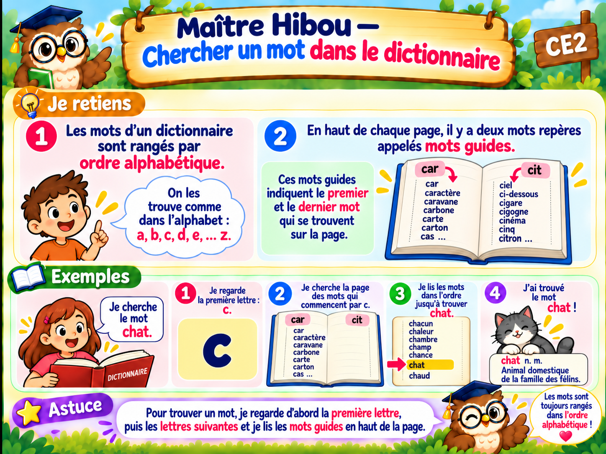

À toi de jouer !
10 questions. Vérifie ta réponse avant de passer à la suivante.
Bravo ! Tu as réussi les 10 questions.
Tu peux maintenant valider ta leçon.
Relis les exemples de Maître Hibou avant de répondre.

10 questions. Vérifie ta réponse avant de passer à la suivante.
Tu peux maintenant valider ta leçon.